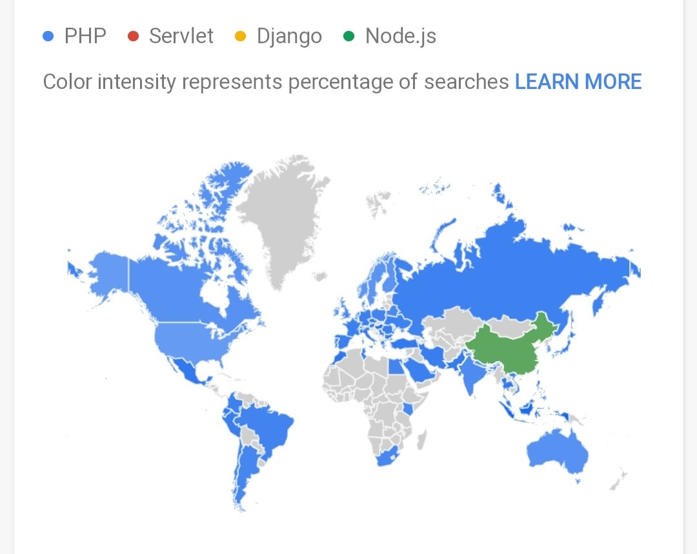

Programming is a formal language comprising a set of instructions that produce various kinds of
output.
A populated definition from Wikipedia...!
I am not going to bordem you by reminding the definitions of various technologies or about, "What is
best programming language that you should learn?", not even about, "What is the best platform for
programming that a beginner should go with?".
Because there are lot of information available of internet that you can easily find them about the
best
platforms and programming languages just in seconds, but what after learn the most popular
technologies
which is unusual for you or for implementation in your real life projects.
So let’s come to the topic that how you should learn programming in effective way that leads y good developer. There are some following points that you should kept in mind before going programming technologies weather you are a beginner or a student in related to computer stream.
It's fact that most of the beginners who have learned some technologies they even don't know about
that why they learned it. It may be for college marks or just to increase the lines of resume.
Your motivation also depends on the reason behind to learn any technology which emphasize the
enthusiasm in your work performance and if your motive is great to learn something then will
absolutely get you enjoyment from it.
The motive may be comes from peoples or industries real life problems on which you can make your own
projects which is factual to all.
Now after clearing the motive behind that what can you do or what type of project you are going to
make.
It’s necessary to find the best programming languages for your project. You can also take help of
Google Trends.
Fig.4
This is very important point to search about the various technologies available in the market and
compare them with by their pros and cons over your project. And after that choose the best based on
time taken to learn and your work potential.
After finding the best technologies that you are going to used in your dream project make a roadmap for
it.
Make a document model by showing the various task and facilities involved in your project modules.
Divide the modules used in your projects into small tasks to better understanding over the model view.
When you tackling with any problem related to your working project than you should only focus on the
solutions and take the other angle view to understand it in better way and find the solution for it.
Generally when you tackle with an error in your project that may be mini or mega, you tries to
modifies your code rather to understand error absolutely. Just search for an error and link with it
your code where it will occur and then tries to modify it accordingly.